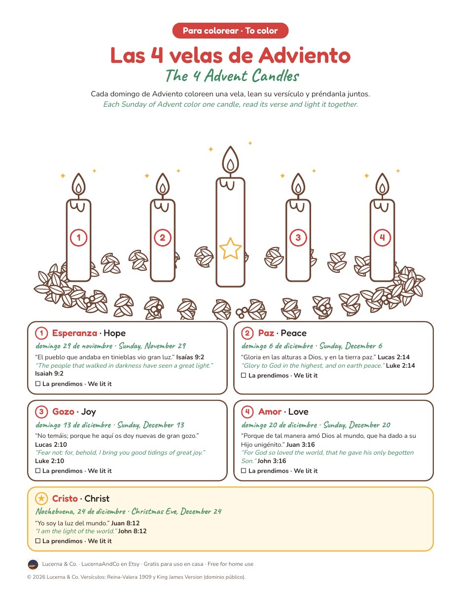

GRATIS · FREE
Las 4 velas de Adviento
The 4 Advent Candles · coloring page
Cada domingo de Adviento coloreen una vela, lean su versículo y préndanla juntos.
Each Sunday of Advent color one candle, read its verse and light it together.

- 4 velas para colorear más la vela de Cristo · 4 candles plus the Christ candle
- Un versículo para cada domingo · a Bible verse for each Sunday
- Fechas de Adviento 2026 · Advent 2026 dates: Nov 29, Dec 6, 13, 20 and Christmas Eve
- Reina-Valera 1909 y King James Version
Gratis para uso en casa, en la iglesia o en la escuela dominical. No necesitas registrarte.
Free for home, church or Sunday school. No sign up.
Su regalo · Your gift
VELAS10
10% de descuento en toda la tienda hasta el 31 de diciembre · 10% off the whole shop through December 31
Ver la tienda en Etsy · Visit the shop
Si les gustaron las velas · If you liked the candles
Luz en Casa27 tarjetas de Adviento con versículo y oración en dos idiomas · 27 bilingual Advent cards
El Camino a BelénJuego de Adviento de 24 noches · 24 night Advent board game
¡Izquierda, Derecha!Juego para la fiesta de Navidad · Christmas left right game
Armemos el NacimientoUn versículo para cada figura · a verse for every nativity figure